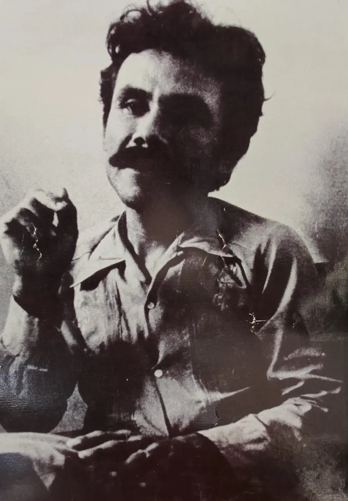
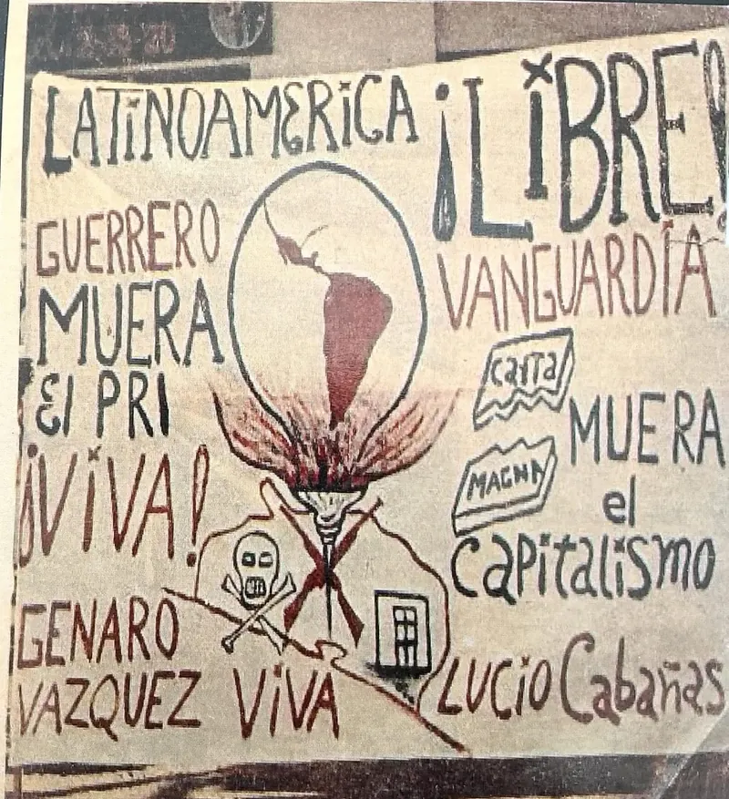
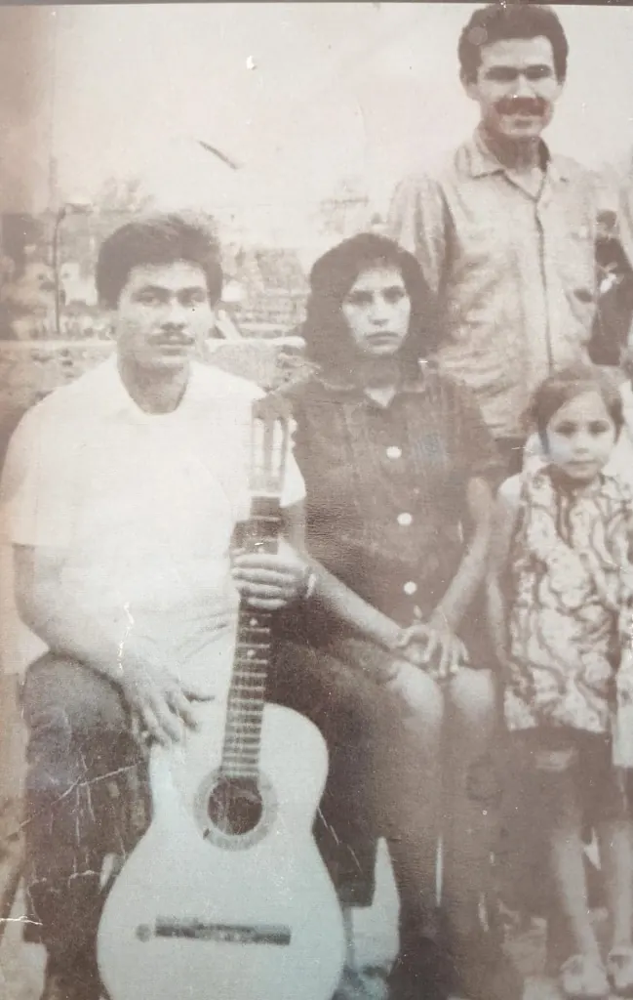
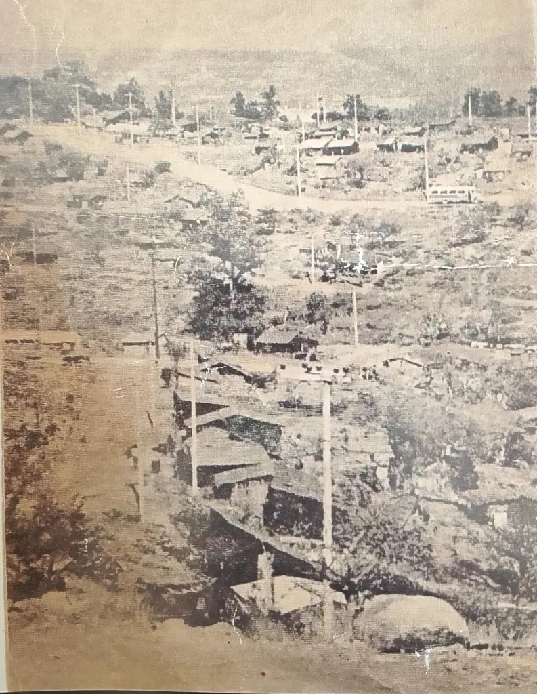
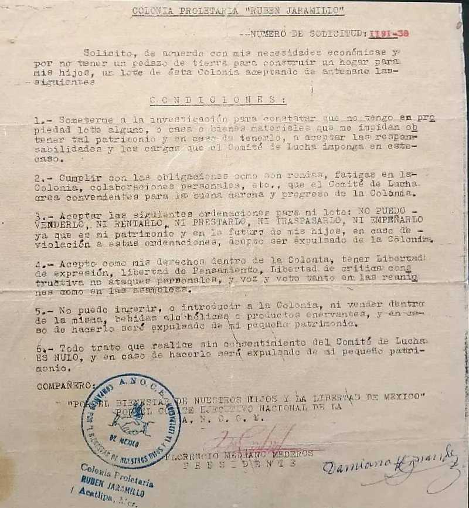
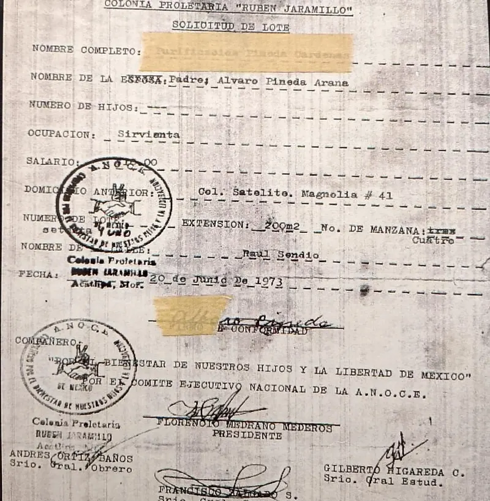
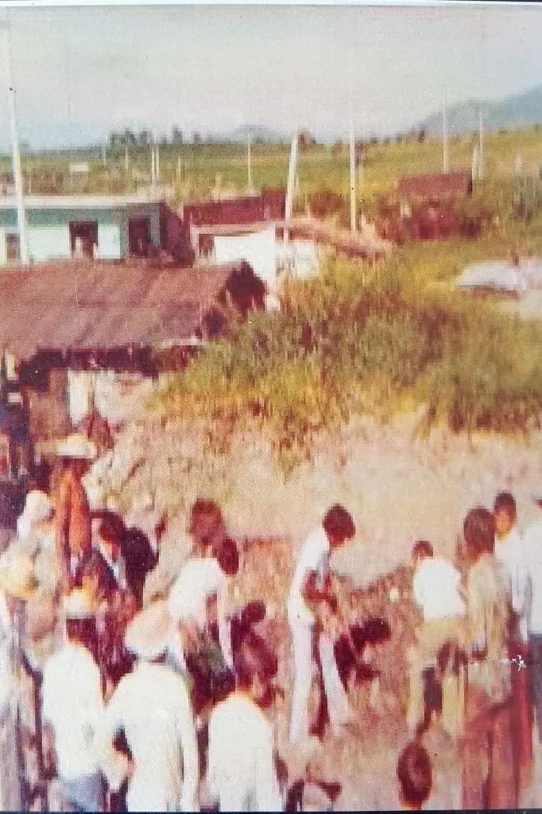
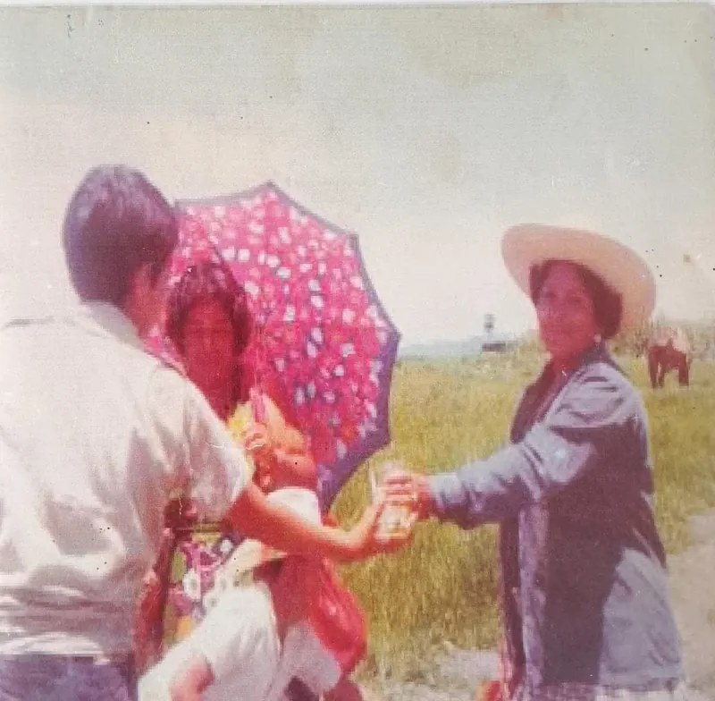

Inicio / Historia de la Colonia Rubén Jaramillo
Historia de la Colonia Rubén Jaramillo
De la toma del terreno el 31 de marzo de 1973 a una comunidad organizada: antecedentes, leyes comunitarias y la respuesta del Estado.
Memoria e identidad
Conoce los antecedentes, la toma del terreno, las leyes que la propia comunidad se dio y la respuesta estatal. Esta es la línea del tiempo:
- 1962Es asesinado Rubén Jaramillo, referente del jaramillismo.
- 1969Florencio Medrano viaja a China para recibir adiestramiento.
- 1972Medrano funda la ANOCE.
- 31 de marzo de 1973Cerca de siete mil personas ocupan “Villa de las Flores” y fundan la colonia.
- 28 de septiembre de 1973El Ejército ocupa militarmente la colonia.

Florencio Medrano Mederos, líder de la toma.Contexto Histórico y Origen
Antecedentes de lucha
El movimiento se inspira y fundamenta en tres experiencias históricas de resistencia:
- Zapatismo: La lucha agraria histórica por la tierra, el agua, los bosques y la autodefensa en Morelos.
- Jaramillismo: Encabezado por Rubén Jaramillo, asesinado en 1962, pionero en la combinación de la lucha legal/electoral, la autodefensa armada y los proyectos comunales.
- Revolución China y Maoísmo: El pensamiento de Mao Tsé-tung y las tesis de la "Guerra Popular Prolongada".

Mural y consignas del movimiento popular e ideológico.Causas socioeconómicas
En las décadas de 1960 y 1970, el modelo económico del "Milagro Mexicano" generó una fuerte crisis en el campo, desempleo y despojo de tierras ejidales. Esto provocó la migración de campesinos pobres hacia centros urbanos, generando una grave crisis de vivienda y hacinamiento.
El líder: Florencio Medrano
Florencio Medrano Mederos, alias "El Güero Medrano", originario de Tlatlaya, Estado de México. Pasó por luchas campesinas, viajó a China en 1969 a recibir adiestramiento militar e ideológico, y formó parte del Partido Revolucionario del Proletariado Mexicano (PRPM).

Medrano y su familia.Surgimiento de la ANOCE
Para 1972, Medrano funda la Asociación Nacional Obrero Campesino Estudiantil (ANOCE) para aglutinar a familias migrantes, obreros, campesinos y estudiantes bajo una alianza popular.
La Invasión y Desarrollo de la Colonia
La Toma del Terreno (31 de marzo de 1973)
Bajo la dirección de Florencio Medrano y la ANOCE, alrededor de siete mil personas ocuparon el fraccionamiento "Villa de las Flores" en el estado de Morelos. Fundaron ahí la Colonia Proletaria Rubén Jaramillo.

La colonia proletaria Rubén Jaramillo.Estrategia político-militar
La toma no era solo para solicitar lotes de vivienda, sino que formaba parte de un proyecto político que buscaba construir un territorio autónomo con apoyo de las masas.
Organización Interna y "Leyes que se Inventaron"
Para mantener el orden interno, sostener la colonia y preparar la autodefensa, la comunidad creó sus propias formas de autogobierno y reglamentos populares.
Asambleas Populares e Inspección
Las decisiones políticas, organizativas y de justicia se tomaban mediante asambleas comunitarias.

Documento de condiciones y reglamento interno.
Solicitud oficial de lote emitida por la A.N.O.C.E."Domingos Rojos"
Trabajo comunitario obligatorio y voluntario para la limpieza, trazado de calles, construcción comunal y faenas.

Trabajos comunitarios y faenas colectivas.Leyes y Reglamentos Internos de Convivencia
- Prohibición del alcohol y drogas: Se prohibió la venta y consumo de bebidas alcohólicas y estupefacientes.
- Control sobre la propiedad de los lotes: Estaba prohibida la venta, especulación o acaparamiento comercial de los terrenos asignados.
- Seguridad comunitaria y comités: Creación de guardias y comités encargados de la vigilancia del perímetro.
- Alianzas con estudiantes y sectores: Organización de brigadas médicas, alfabetización y apoyo técnico.

Convivencia e integración comunitaria.La Respuesta del Estado: Ocupación Militar
Ocupación Militar (28 de septiembre de 1973)
Ante la radicalización y la fuerza del proyecto, el gobierno federal y el Ejército Mexicano ejecutaron una ocupación militar de la colonia.
Estrategia de Guerra de Baja Intensidad
En la Colonia Rubén Jaramillo el Estado aplicó una estrategia contrainsurgente combinada.
- Coerción física y psicológica: Presencia militar permanente durante varios años.
- Asistencialismo estatal: El gobierno implementó programas institucionales relacionados con servicios, vivienda, escuelas y centros de salud.
Desenlace del Güero Medrano
Florencio Medrano pasó a la clandestinidad y continuó con la lucha guerrillera hasta su posterior fallecimiento en combate.
Juntos construimos una mejor comunidad
¿Necesitas hacer una gestión o resolver una duda? Llámanos o visítanos en la delegación: te atendemos con gusto.